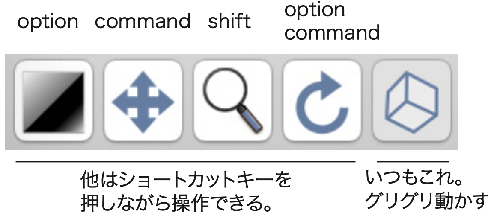

Horos/OsiriX (Mac)
This page is partially Japanease only. Horos can do; viewing DICOM, browsing, reconstructing multiple planes, and volume rendering. However, there are still some bugs in segmentation, creating movies, etc. Due to these bugs, I do not use Horos for the research purpose. I am using Horos for educational purpose; medical students can view DICOM files of CT and MRI to study human anatomy.
Things to do in Horos/OsiriX /やることリスト
- Installation of app and plug-ins/インストール、プラグイン追加（初回だけ）
- Basic operation/Horosの基礎、ウィンドウについて。
- Import JPEG series/連続JPEG画像をとりこむ。DICOM変換
- Manage database/データベース（患者名）を整理する
- Grayscale images for MPR and VR/グレースケール連続画像は、3D再構築Multiple planer reconstruction (MPR)とVolume Rendering（VR）に利用する
- Color images for MPR/カラー画像は、3D再構築Multiple planer reconstruction (MPR)に利用する
- Create movie/動画を書き出す
- Region of Interest（ROI）/関心領域
- Brightness/明暗でROI指定（Horosだけでやる方法）
- Drawing/手作業でROI指定（Horosだけでやる方法）
- Color/色域指定（Photoshopで処理してからHorosでやる方法）
Bugs in Horos/バグ
-
Can't install plug-ins After installing v3.3.6, when I tried to add a plug-in (JPEG-DICOM), the list did not appear, but "No Horos plug-in server available. The previously installed Horos and JPEG-DICOM can be used. It seems that the application cannot access the server. The address (see below) seem to exist. Go to JPEGtoDICOM from the following site and download the file JPEGtoDICOM.horosplugin.zip. https://horosproject.org/horos-content/plugins/horos/
プラグインをインストールできない 2021.03 （2021.6 できるようになった）v3.3.6をインストール後、プラグイン（JPEG-DICOM）を追加しようと思ったら、一覧が出てきません。「No Horos plug-in server available.」となります。以前にインストールされたHorosとJPEG-DICOMはそのまま使えますが、やはり一覧がでません。アプリからサーバにアクセスできないようです。ただし、コンテンツは存在しているようです。下記のサイトから、JPEGtoDICOMへ移動し、その中のJPEGtoDICOM.horosplugin.zipをダウンロードします。Horosを起動した状態で、ダウンロードしたファイルをダブルクリックするとインストールができるようです。 -
Can't create movie properly (2020.12) In Horos 3.3.6 and earlier, movies from MPR (multiplanar reconstruction) can created with "Movie Export", but created movie become small. In v4.0.0 Release Candidate 4, the movie is slightly larger. RC4 has a bug with volume rendering. Fly Thru is broken.
MPR/VRからの動画描きだし 2020.12 Horos 3.3.6やそれ以前のバージョンで、MPR(多平面再構築)から動画を描き出したいとき、Movie Exportを行います。しかし、書き出される動画が小さく(たてよこのピクセル数が少なく)なってしまうというバグがあります。v4.0.0 Release Candidate4では、やや大きくなるので実用的ですが、こんどはVolume Renderingでバグがります。いまのところ、新旧を使い分けるくらいしか、対応策がありません。新旧のバージョン両方をインストールして、区別するために名称変更して使っています。データベースフォルダは共通で使えるので、データベースが倍増することはありません。OsiriXでは問題ありません。- Horos 3.3.6:MPR動画は小さくて使いにくい(一辺約500 pixel)。VR動画は正常。
- Horos 4.0.0RC4:MPR動画はやや大きくなってなんとか使える(一辺約700 pixel)。VR動画はFly Thruの座標がずれるので使えない。
- OsiriX MD v11(有料版):MPR動画は大きくて実用的。VR動画は正常。
-
Shutdown app after segmentation (2020) When I tried to collect the volume values of the segments, the app was shutdown. I decided to use 3D slicer for segmentation for this issue.
セグメンテーション後クラッシュ 2020 Segmentationした領域の体積数値をみようとしたら、落ちました。いちおう回避策はありますが、この件でも、セグメンテーションは、3D slicerにしようと思いました。 -
New Horos does not start 2020 Horos 4.0.0 RC5 (2020.12) does not start 2D viewer, MBP13 (2105), OS11.1 Big Sur.
新しいHorosが起動しない 2020 Horos 4.0.0 RC5（2020.12）は、2Dビューワが起動しません。MBP13（2105）、OS11.1 Big Sur。
Installation/インストール、プラグイン追加（初回だけ）
App/アプリ本体
Download app from below link and install. Use English only in the language setting.
https://horosproject.org
ここからダウンロード、インストールする。日本語環境が用意されているが、フリーズするので、英語のまま使用すること。開くと、いろいろメッセージが出てくるけれど、とりあえず使ってみる。Continueボタン。
plugins/プラグイン
Install the plugin "JPEG to DICOM", Plug-ins Plug-in Manager, a new window will open. Click Horos Plugins at the top and select JPEG to DICOM in the pull-down. Click Download & Install at the bottom. You only need to do this once at the beginning of use.
プラグイン「JPEG to DICOM」をインストール、Plug-ins Plug-in Managerで、新しいウィンドウが開く。上部のHoros Pluginsをクリックし、プルダウンでJPEG to DICOMを選ぶ。下部のDownload & Installをクリック。この作業は、インストール後の使い始めに一度行うだけです。
Basic operation, windows/Horosの基礎、ウィンドウについて
Horos has three major types of windows, plus a number of variants. The following is a list of the five most frequently used windows.
ウィンドウは、大きく分けて3種類あり、さらに派生したウィンドウもある。よく使うウィンドウを下記に5種類挙げた。データベースウィンドウで、見たいデータをダブルクリックして、2Dビューワを出す。2Dビューワで、メニューやボタンを使って、3Dビューワを出す。
- Database/データベース（起動時のウィンドウ）
- 2D viewer/2Dビューワ
- Drowsing slices/連続画像の閲覧
- Orthogonal Planer Reconstruction/直行面再構築
- 3D viewer/3Dビューワ
- Multiple Planer Reconstruction/多平面再構築
- Volume Rendering/ボリュームレンダリング
Import JPEG series/JPEG連続画像を取り込む（DICOMに変換して取り込む）
Plug-ins>Database>JPEG to DICOM- Go to a folder containing serial images. Select all images by
Clickfirst image, ancShift+Clicklast image. OrCntrl+A. Wait for a while. - Patient = sample, date of exam = experiment. I use comment to memorize date of experiment, sample, pixel size.
OpenWait for a while.- (Repeat if you have other series)
Plug-ins>Database>JPEG to DICOM- 連続画像を含むフォルダに行って、すべての画像を選択する。最初の画像を
Click、最後の画像をShift+Click。またはCntrl+A。画像が多いと、選択されるのに、数秒かかる。 - 試料名(患者名)や、実験日(検査日)などを入力する。私は、実験日、試料名、画像のピクセルサイズを入力している。
- 開く、
Open（多少、時間がかかる） - ほかにも連続画像があれば、作業を繰り返す
Tips/ヒント
-
Bug In previous versions of Horos, I was able to import by simply selecting a folder. However, in newer versions, when I import by selecting a folder, the images become out of order. This seems to be a bug. If I add an operation to select all the images as described above, it imports correctly. Paid OsiriX has an update to the JPEG to DICOM plugin in January 2021, and folder selection is back.
過去のHorosバージョンでは、フォルダを選択するだけで、取り込めました。しかし、新しいバージョンでフォルダ選択で取り込んだ場合、画像の順がバラバラになります。きっとバグです。上記のようにすべての画像を選択する操作を入れると、正常に取り込めます。有料OsiriXでは、2021年1月のJPEG to DICOMプラグインのアップデートがあり、フォルダ選択が可能に戻りました。 -
File name Batch conversion/ファイル名一括変換 File name batch conversion is done when there are special circumstances, such as filenames reverting from 9999 to 0001 at the middle of imaging. Horos needs a sequencial number anywhere in the file name. In contrast, 3D slicer requires a complete sequential number (center column of the table). In case that the original filename is left behind the sequential number (right column of the table), 3D slicer will not recognize it as a serial image. When you change the numbering to complete sequential numbers, leave a note in the experiment notebook so that the original file names can be matched (so that the experiment can be reproduced). Just for information, Horos accepts both complete serial name (center column) and serial number plus original name (right column).
| Original name | Compatible for 3D slicer |
Uncompatible for 3Dslicer, but compatible for Horos |
|---|---|---|
| DSC_9997.jpg | 0001.jpg | 0001_DSC_9997.jpg |
| DSC_9998.jpg | 0002.jpg | 0002_DSC_9998.jpg |
| DSC_9999.jpg | 0003.jpg | 0003_DSC_9999.jpg |
| DSC_0001.jpg | 0004.jpg | 0004_DSC_0001.jpg |
| DSC_0002.jpg | 0005.jpg | 0005_DSC_0002.jpg |
| DSC_0003.jpg | 0006.jpg | 0006_DSC_0003.jpg |
- Windows OS:
Explore,Select multiple files,Rename. "Input-char+(1).jpg" will be created. Original fileneme will be lost. - Mac OS: ：
Finder,Select multiple files,Right click, sub-menu,Rename. For customize in some extent, use pull-downFormat, and following pull-downName and Counter. -
Adobe Bridge (Paid app) can custamize file names in any style you like.
撮影中にファイル名が9999から0001に戻ったとか、特別な事情があるときに、ファイル名を一括で変換する。CoMBIの撮影が通常に成功した場合は、必要ない。Horosの場合、頭に連番さえあればよく、元ファイル名も残したスタイルが使える。なお、3D slicerの場合、完全な連番（表の中央列）が必要である。連番のうしろに元ファイル名を残した場合（表の右列）、3D slicerは連続画像とは認識しない。完全な連番に変更しても、元々のファイル名と照合できるよう（実験が再現できるよう）、実験ノートにメモを残す。
Windows OSやmacOSの組み込み機能で変換できる。Windowsの場合、Exploreで、複数選択Select multiple files、名称変更Renameすると、「入力文字(1).jpg」と、カッコつき連番数字になる。元のファイル名は残らないので注意する。Macの場合、Finderで、複数選択Select multiple files、右クリック（副メニュー）Right click, sub-menuより、ファイル名を変更Rename。完全変更や連番追記など、ある程度カスタマイズできる。プルダウンメニューのFormat, 次のプルダウン、Name and Counterを使う。もし、Adobe Bridge（有料アプリ）があれば、細かく設定ができる。
Manage database/データベース（患者名）を整理する
In CoMBI, multiple serial image series (color series and grayscale series, different sizes) are created from a single specimen. If each series is imported separately, they will appear in the list as multiple patients, with two or three rows. The same specimen can be made into one line (one patient name), and the derived series (multiple test items) can be displayed together.
- Select multiple rows (patient names) to be merged.
Shift + click - On the selected rows,
Right click>Merge Selected Studies - Check
Use same Patient IDandMerge as a single study OK
同一標本から、複数の連続画像シリーズ（カラーシリーズとグレースケールシリーズ、サイズ違い）ができる。それぞれで取り込むと、リストには 2行、3行と、複数患者として表示されてしまう。これを、同一標本なら1行（1患者名）にして、派生したシリーズ（複数の検査項目）をまとめて表示させられます。
- まとめたい行(患者名)を複数選択する。
Shift + click - 選択した行の上で、
Right clickし、Merge Selected Studiesを選ぶ。 - チェック項目では、上2つの項目にチェックが入っていることを確認する。
Use same Patient ID,Merge as a single study OK
Use grayscale series/グレースケール連続画像の利用
Grayscale images can be used for all reconstruction method, such as 2D orthogonal MPR, 3D MPR, 3D curved MPR, 3D MIP, 3D volume rendering, 3D surface rendering, and 3D endoscopy
3D viewerorgear mark- Select
3D MPR,3D volume rendering, etc. - Before reconstruction, input voxel size. XY is pixel size, and Z is sectioning thickness. As Horos is designed for human data, available unit is only mm.
すべての3D再構築法に利用できる。2D orthogonal MPR, 3D MPR, 3D curved MPR, 3D MIP, 3D volume rendering, 3D surface rendering, 3D endoscopy。
3D viewerまたは歯車マークより、3D MPR,3D volume renderingなどを選ぶと、別のウィンドウがでる。- 再構築する前に、ボクセルサイズを入力する。XYはピクセルサイズ、Zは切削厚。ヒトCT用アプリなので、単位がmmしかない。µｍだとおもって入力する。
Tips/ヒント
-
If you hold down
Shiftand select MPR or VR, you will be prompted to enter the voxel size each time.Shiftを押しながら、MPRやVRを選択すると、毎回、ボクセルサイズを入力する画面をだせる。 -
In both Volume Rendering and MPR, the initial display may be dark, but the brightness and contrast (Window level, Window Width) can be adjusted to make it easier to see.
Volume RenderingでもMPRでも、初期表示では、暗いかもしれないが、明るさやコントラスト(Window level、Window Width)をいじって、見やすくする。 -
In rare cases, the
gear mark(2D/3D reconstruction) may disappear. When this happens, I get a message something like "not volume data" and cannot proceed. The cause is unknown. It can be solved by one of the followings;
まれに、歯車マーク（2D/3D再構築)が消えてしまうことがあります。こうなると「Volume dataではありません」というたぐいのメッセージがでて、先に進めません。原因不明です。解決することはしますが、いいかげんです。次の３つのうちどれかです。- Wait a few seconds till it come out. そのまま数秒待つと出てきた。
- Wait a day, then it come out. 次の日にはできた。
- Use other PC. ほかのパソコンではできた。いずれも同一のデータセットです。
Use color series/カラー画像の利用
Color series can be used only for planer reconstruction; 2D orthogonal MPR, 3D MPR
3D viewerorgear mark- Select
2D orthogonal MPRor3D MPR. - Before reconstruction, input voxel size. XY is pixel size, and Z is sectioning thickness. As Horos is designed for human data, available unit is only mm.
面の再構築にだけ利用できる。2D orthogonal MPR, 3D MPR
3D viewerまたは歯車マークより、2D orthogonal MPRまたは3D MPRを選ぶと、別のウィンドウがでる。- 再構築する前に、数値を入力する。XYはピクセルサイズ、Zは切削厚。ヒトCT用アプリなので、単位がmmしかない。µｍだとおもって入力する。
Tips/ヒント
-
If you hold down
Shiftand select MPR or VR, you will be prompted to enter the voxel size each time.Shiftを押しながら、MPRやVRを選択すると、毎回、ボクセルサイズを入力する画面をだせる。 -
In rare cases, the
gear mark(2D/3D reconstruction) may disappear. When this happens, I get a message something like "not volume data" and cannot proceed. The cause is unknown. It can be solved by one of the followings;
まれに、歯車マーク（2D/3D再構築)が消えてしまうことがあります。こうなると「Volume dataではありません」というたぐいのメッセージがでて、先に進めません。原因不明です。解決することはしますが、いいかげんです。次の３つのうちどれかです。- Wait a few seconds till it come out. そのまま数秒待つと出てきた。
- Wait a day, then it come out. 次の日にはできた。
- Use other PC. ほかのパソコンではできた。いずれも同一のデータセットです。
Advanced operation/発展的な操作
Below, from left to right, adjust brightness and contrast, move, scale, rotate, and rotate 3D (for volume rendering). Drag the screen up, down, left, or right. To select a tool, either press the respective button or press the show-low cut key. The shortcut keys are definitely more convenient. Browsing serial images is done by mouse scrolling. If your PC monitor is small, the tool buttons may be hidden. Press the >> symbol on the far right to reveal them. Alternatively, you can move the most frequently used buttons and menus to the left. For customizing tool bar, right-click in the gray area where the tool buttons are located.
下図、左から、明るさとコントラストの調整、移動、拡大縮小、回転、3D回転（Volume Rendering用）。画面を上下左右にドラッグする。ツール選択は、それぞれのボタンを押すか、ショーロカットキーを押すか。ショートカットキーのほうが断然便利です。連続画像をめくるのは、マウススクロールなど。パソコンモニタが小さい場合、ツールボタンが隠れるときがあります。隠れていれば、右端のマーク>>を押すとでてきます。もしくは、よく使うボタンやメニューを左へ寄せることもできます。ツールボタンがあるグレーの領域で、右クリックすると、ツールボタンの表示位置や有無をカスタマイズできます。

Tools usally used. いつもつかう、基本のツール
2D orthogonal MPR
Orthogonal 3 planes can be reconstructed. Similar and lighter work than the next 3D MPR. Both grayscale and color series can be reconstructed. MeasurementSince it is almost the same as the following 3D MPR, I skip the explanation.
直行面だけで、3面を再構築できる。次の3D MPRより軽い作業。グレースケール連続画像、カラースケール連続画像の両方でできる。静止画、動画、距離の計測ができる。下記の3D MPRとほぼ同じなので、説明は省きます。
3D MPR
Reconstruct arbitrary planes from grayscale images and color images.
- The initial view may be dark. Adjust
Thick Slabfrom 1 to 10. - Grab
colored axisto rotate. Grabcrossing pointto move. - Adjust brightness and contrast (WL, WW). Unstable in case of 8-bit JPEG series. Just try.
- Select
Opacity. - Change
Thick Slab - Select
Modefor overlay.
- Select
- Items to be displayed can be changed by a key
Tab. Click repeatedly to select. - ON/OFF colored axis. Click
Plus buttonin the tool bar. - Export steal image from active window.
File>Export>JPEGorTIFF - Export movie.
File>Export>Movie. SetFromandTo. SetIntervalasSame as thicknessfor high quality movie. Adjust interval withsliding bar. Note: Unstable in Horos, while stable in OsiriX. Horos creates very small movies. Lengthbutton is a measruement tool.
任意の面を再構築する。グレースケール連続画像、カラースケール連続画像の両方でできる。
- 初期表示は、まっくらな場合がある。
Thick Slabをいじると画像がでてくる。左横の数字を大きくする。たぶん初期値1。2,3,4...10...と大きくしてみる。 色つき軸を握って、回転させる。軸の交点を握って、中心を移動させる。明るさコントラスト調整はぎこちない。初期の表示がいいことが多いが、いろいろいじってみるのも価値あります。下記の３つを変えながら、明るさコントラスト（WL, WW）を変えて、よさそうなところがみつかるか、どうか。Opacityのプルダウンを変えてみる。Thick Slabで重ね合わせる量を変えてみる。Modeで重ね合わせの種類を変えてみる。
- 画面に表示される文字たちを消したいとき、キーボード
Tabを何度か押して表示モードを選択します。 - 色つき軸の表示をON/OFFできます。ツールバーに
十字マークのボタンがあります。 - 静止画の書き出し、クリックしてアクティブになっているウィンドウを書き出せる。
File,Export,JPEGやTIFFなど。 - 動画の書き出し、
File,Export,Movie。Horosの場合、不安定。小さな画面で書き出されてしまう。小さくてもよければ使えます。もしくは、直交面MPRでよければ、そちらのほうは安定しています。OsiriX（有料）は、問題ない。From,Toで範囲を決める。Intervalでは、Same as thicknessにチェックすると高精細。重ければ、スライドバーで調整する。 - メニューバーのボタン、計測ツール、
Lengthで距離をはかれます。
3D Volume Rendering
Beautiful volume rendered images are attractive. However, volume rendering alone is not suitable for quantification. It is better to use 3D MPR for length and Segmentation for volume.
- Initial setup. If you have dGPU, check
GPUin the tool bar, orHoros>Reference,GPU,Renderer, checkGPU. - Lighten the duty; Change display quality by
Level of Detail> fromFinetoCoarse. - Select items to be displayed by a key
Tab. - Dice like symbol is
Orientation. Select display ON or OFF on the tool bar. - Ajust window level and window width by basic tools.
- Coloring by CLUT 8 bit. Try preset at first, from
CLUTpulldown menu. Custamized color settings can be saved. -
Coloring by CLUT 16 bit. Fine coloring is possible. Custamized color settings can be saved.
-
Export steel image.
File>Export>JPEGorTIFF - Export movie by
Fly ThruFly Thruon the tool bar. Or menu bar >3D viewer>Add Fly Thru Point.- Record steps. Repeat moving a little then click
+. Movies will be created tracking the steps. Crop can be record, but WW, WL can not (maybe a bug) - Save steps as a file. Button
Export(optional). - Go to tab
Movie. - Set
Number of Frames. 30 frame/sec in general. ex. 300 flame to create 10 sec movie. - Click
Computeonce. - Format
QuickTime, Quality:Best Rendering, SizeCurrent. If the movie become too heavy in the next step, come back here and change settings. Saveas a movie file. Wait for a while.
いかにも3D画像を再構築する。美しい画像は魅力的である。画像を見せるだけで実験データとして済むなら、このVolume Renderingだけでよい。しかし、Volume Renderingだけでは数値化には向かない。長さは3D MPR、体積はSegmentationで行うのがよい。
- 最初の設定：もしGPUが別についているマシンなら、ツールバー内にあるGPUにチェックをいれます。もしくは、
Horos>Reference,GPU,Renderer,GPUにチェックします。そのほうが快適に動作するでしょう。 - 動作が重いとき、
Level of Detailのスライダーを、FineからCoarseに寄せます。粗い表示にすると軽くなる。作業は粗い表示で、いざ静止画や動画に描き出すときは、細かい表示を使います。 - 画面に表示される文字たちを消したいとき、キーボード
Tabを何度か押して表示モードを選択します。 - 画面のさいころ様のマークは、
Orientationです。ツールバーのボタンで表示をON/OFFします。 - 明るさとコントラスト window level and window width。基本ツールで、上下左右ドラッグします。
- 色つけ CLUT 8 bit、まずはプリセット、CLUTのプルダウンから選べます。カスタマイズして、プリセットを作って保存することもできます。
- 色つけ CLUT 16 bit、豊かな階調で色付けできます。カスタマイズしてプリセットとして保存できます。
- 静止画の書き出し
File,Export,JPEGやTIFFなど。 - 動画の書き出し Fly Thru
- ツールバーの
ボタンFly Thruを選びます。または、メニューバーの3D viewer,Add Fly Thru Pointを選びます。 - Stepを記録 ちょっと動かしては、
+ボタンをおして、繰り返します。動かしたい奇跡をまずは点で記録しています。あとで点を結んで動画にします。ヒント、クロップ操作も記録できます。明るさコントラスト調整は、記録できない、ことが多い。たぶんバグ。 - オプション 記録した点を、ファイル保存できます。下のボタン
Export - 動画 タブ
Movieに移ります - Number of Frames, 作りたい動画の長さを、秒数×30で入力。一般に、30 frame/secです。10秒動画にしたいなら、300です。
Computeを一度押します。- 形式
QuickTime、Quality:Best Rendering、SizeCurrent。次のステップで重すぎれば、サイズを調整してください。 Save,ファイル名を決めたりして、書き出しは時間がかかる。
- ツールバーの
セグメンテーション Segmentation
Segmentation is the selection and drawing of only a specific region (Region of Interest, ROI). From the selected ROIs, volume values are obtained. In some experiments, segmentation may be a goal. The ROI can be specified either by light/dark selection (Horos/ROI>Grow Region) or by manual selection of the shape (Horos/Button Closed Polygon). In the case of CoMBI, since it is a color image, you can also use area specification by color (Photoshop/Selection/Grow Region + Horos/Grow Region).
- ROI specified by brightness: This method works well in human CT data to segment bones and lungd, a shape with a clear contrast. In the other hand, this method may not work well with CoMBI serial color images of research samples.
- ROI specification manually: Manual drawing is reliable, but takes a long time. This method can be done in grayscale and color image series. This is time consuming, for example, it took me half a day to make segments of 19 cervical lymph nodes.
- Area specified by color: Photoshop or ImageJ can automatically specify a color gamut by referring to a color serial images, and save as binary image files. In Photoshop, areas are selected by eye-dropper tool, and can add and delete colors, however, it can not input values. In ImageJ, values of RGB, biriliant, and brightness are input, but multiple colors can not selected easily.
セグメンテーションは、特定の領域（関心領域、Region of Interest、ROI）だけを選択すること、描出することです。選択したROIからは、体積の数値が得られます。実験では、セグメンテーションが目標になる場合があるでしょう。ROIを指定する方法として、一般的な画像（グレースケールのDICOM画像）では、明暗で選択する方法(Horos/ROI>Grow Region)と、形状を手作業で選択する方法(Horos/ボタンClosed Polygon)があります。CoMBIの場合、カラー画像なので、色域指定も利用できます(Photoshop/選択範囲/色域指定 + Horos/Grow Region)。
- 明暗でROI指定: 明暗のコントラストがハッキリし、かつ、輪郭がハッキリした形状であればうまくいくでしょう。例えば、ヒトCTデータなら、骨や肺です。しかしながら、研究試料のCoMBI連続画像では、この方法ではうまくいかないことが多いでしょう。この方法だけでは思い通りに指定できず、結局手描きがいいとなるでしょう。
- 手作業でROI指定: 見手作業は確実です。ROI指定で参照する画像は、グレースケールでもカラーでも使えます。CoMBIの場合、カラー画像は参照しやすく価値があります。ROI情報はテキストデータに保存され、あとでVolume Renderingによる3D再構築像に重ねて表示できます。ただし、自動ではない分、時間がかかります。例えば、頚リンパ節 19個を選択するのに半日かかりました。
- 色域指定: Photoshopなどで、カラー連続画像を参照し、色域指定を自動で行えます。指定領域を二値化した連続画像をあらたに生成し、ROI(Grow Region)を自動で行います。二段階になりますが、いずれも自動です。色域指定にはPhotoshopやImageJがつかえます。Photoshopの場合、指定条件は見た目で、スポイトで選択します。さらに、複数の色を追加したり、削除したりできるのは便利です。しかし、数値入力では指定できません。ImageJの場合、RGB、彩度、明暗の各情報を数値入力で指定します。しかし、複数色の追加や削除が容易ではありません。
1. ROI specified by brightness/明るさでROI指定
Select area with specific brightness. This may not work for CoMBI data, thus I describe simply here.
- Go to
Orthogonal planesor3D MPR - Use grayscale or color images.
- ROI/Grow Region
グレースケール画像で、明るさだけで選択する。あんまりうまくいかないと思うのであっさりと記載します。
- 直行面MPRのウィンドウで行います（3D MPRでもできます）。
- グレーでもカラー画像でも使えます。
- ROI/Grow Region
2. ROI specification manually/手作業でROI指定
Preparation
- Go to
Orthogonal planesor3D MPR - Use grayscale or color images.
Create ROI, save ROI
- Tool
Closed Polygoncan select complicated shape. - Draw ROI every several images.
- Fill between ROIs automativally. Display a slice with a ROI, and
ROI>ROI Volume>Generate missing ROIs - Name ROIs.
ROI>ROI rename>All ROIs in this series. To view names, openROI>ROI manager. - Save ROIs.
ROI>Save All ROIs in this series. Extension is ".rois_series". - To create multiple ROI, delete primary ROI after saving.
ROI>Delete all ROIs in this series. Multiple ".rois_series" files are created, thus name systematically to distinguish each other. - Repeat creat/save/delete.
Display ROI overlaied on volume rendered image
- Reveal grayscale series to be volume rendered in the 2D Viewer. (double click a patient in the database, and reveal in the 2D Viewer.)
- Import roi_series files.
ROI>Import ROIs. If you import multiple ROI, repeat import. - Volume rendering.
3D>Volume Rendering. Input XYZ values. 3D Viewer will be opened. - Check the list of ROIs.
ROI>ROI manager. A window "3D ROI manager" shows the list. - ROI display ON/OFF by check box. Change color, and opacity.
Use values of ROI volume/体積の数値
- See
2D viewerのROI manager>Volume(Only this method is stable, and below 2 are unstable.) - 3D Viewer >
ROI>ROI Volume>Compute Volume(Unstable, Horos often shuts down. OsiriX is stable.) - 3D Viewer >
ROI managershowsVolume, but values are odd. Most of small ROI become "0". Useless.
準備
- 直行面MPRのウィンドウで行います（3D MPRでもできます）
- グレーでもカラー画像でも使えます。
ROI指定、ROIファイル保存
ボタンClosed Polygonで複雑な形状でもROIにする。- 数枚ごとにROIを囲む。
- 描いたROIとROIの間を自動で埋める。
ROI>ROI Volume>Generate missing ROIs。このとき、描いたROIがあるスライスを表示しておく。ROIがないスライスだと、メニューが非アクティブで押せない。 - ROI の名前をきめる。
ROI>ROI rename>All ROIs in this series。(ROI>ROI managerを開いておくと、名前が決まったのが見える) - ROIを保存する。
ROI>Save All ROIs in this series。拡張子、rois_series。 - 複数のROIを指定したいとき、いったん最初のROIを削除する。
ROI>Delete all ROIs in this series - 複数のROIを指定するには、上記を繰り返す。（注意）ROIファイルが複数できることになります。どれがどれか分かるように、ファイル名を決めます。
ROIを3D再構築像に重ね合わせる
- 3D再構築につかうグレースケール連続画像を2D Viewerに表示させる。（データベースウィンドウで、データをダブルクリックすると、表示されるのが2D Viewer）
- roi_seriesファイルを読み込む
ROI>Import ROIs。複数あれば複数回読み込む。 - 3D 再構築。
3D>Volume RenderingXYZのスケールを入力し、3D Viewer モードになる - ROI ファイルのリストを表示
ROI>ROI manager。「3D ROI manager」というウィンドウが開く。読み込んだROIのリストが表示される (メニュー表記は同じだが、上記の 2DViewer モードのときは異なるウィンドウ) - ROI表示のオンオフと着色 左端のチェック欄に、チェックを入れると、VRに重ねて表示される。 表示色を変更できる。透明度も調整できる。
体積の数値
3通りあるがHorosで安定しているのは１だけ。
2D viewerのROI manager、Volumeが表示される。下記のComputeVolumeよりやや大きめに出るが、比較データのときは、数値をよむ方法を統一すればよい。Horosは、これだけが安定している。- 3D Viewerで、
ROI>ROI Volume>Compute Volume。注意:Horosはよく落ちるのでおすすめしない。OsiriXは安定している。 3D ViewerのROI managerでも、Volumeが表示されるが、小さいモノはゼロとなったり、数値が変になる。おすすめしない。
3.ROI by color gamut/色域指定
Two apps, Photoshop and Horos, are used to create ROI. Photoshop specifies ROI by color gamut, then save images as binary. Almost automatic method.
Photoshopで二値化したのちHorosでROI指定する。2段階だが全自動。
Photoshop
- Prepare color series for specification by color gamut by Photoshop, and grayscale images for VR by Horos. Create a folder to save binary images later.
- Open one color image in the Photoshop.
- Start recording in
ActionSelect>Color Range.... Set tolerances low (5 or so). Use eye-drop tool to specify. Add color+, delete color-.- Binary image
- Button
OKshows selected area. - Keyboard
Deletedeletes selection. Color after selection is set asWhite. - (Optional) Smooth borders.
Select>Modify>Smooth... - Invert selection
Select>Inverse - Keyboard
Deletedelete selection. Color after selection is set asBlack. Image>Mode>Grayscale.
- Button
Save asin the folder prepared.Closeimage.
- Stop recording in
Action - Batch prossess.
File>Automate>Batch.... Prosess all serial images using the action recorded.
Photoshop
- 準備 カラー連続画像は、Photoshop色域指定用、 グレースケール連続画像は、Horos, VR用。フォルダを新規にひとつつくる（二値化白黒連続画像用）
- カラー画像のうち、色域指定に使えそうな一枚だけ開く
- アクションで記録開始
- Photoshopで、特定の色を選ぶ。
選択範囲 Select>色域指定 Color Range...許容量を少なめ（5とか）にして、スポイトで指定する。追加 (+)や削減(ー)を使って調節する。 - 二値化白黒画像とする
- OKボタンをおすと、選択領域が表示される。
- キーボード
Deleteで選択範囲を削除する。削除後の色はWhiteを指定する - （必要なら、境界線をなめらかにする。
選択範囲 Select>選択範囲の変更 Modify>滑らかに Smooth...） - 選択範囲を反転させる。
選択範囲 Select>反転 Inverse - キーボード
Deleteで選択範囲を削除する。削除後の色はBlackを指定する イメージ Image>モード Mode>グレースケール grayscale
- 別名で保存
Save as新しく作っておいたフォルダを指定して保存する - 画像を閉じる
Close
- Photoshopで、特定の色を選ぶ。
- アクションの記録停止
- 連続画像に、記録したアクションを一括処理する
ファイル File>自動処理 Automate>バッチ Batch...
Tips/ヒント
-
Action stopped at "invet", if there was no selection area at all. To solve this issue, I drew a very small square at the corner of every image using the color I wanted to specify. There was even a small selection area in all images, and the action worked correctly.
アクションが途中で止まることがあった。選択領域が全くない場合、選択範囲の反転で、止まっていました。対策として、すべての画像の端っこに、指定したい色で極小の四角を描きました。これで、すべての連続画像にわずかでも選択範囲が存在することになり、アクションが正常に行われました。 -
Don't forget to save as binarized images in Phothoshop. If images are left as RGB, the subsequent Horos will not be able to select the ROI properly.
二値化画像をグレースケールにするのを忘れずに。RGBのままだと、以降のHorosでうまくROIが選べない。 -
If the Action is saved as a Droplet file, it can be used for the same process in another experiment.
アクションをDropletファイルとして保存しておけば、別の実験での同一処理につかえます。
Horos/OsiriX
- Import binary serial images into Horos.
plug-in,JPEG to DICOM. Select serial images byclickfirst image andshift+clicklast image, then import. - In the database window,
double clickbinary image series, to shown in 2D viewer. ROI,Grow Region. Threshold is set as 100 or any number.- Save ROI as a file.
ROI,Save all ROIs in this series - Go back to database window,
double clickgrayscale image series (for VR) to shown in 2D viewer. - Import ROI file.
ROI,Import ROI Volume Renderingto opne 3D Viewer- Set up appearance of ROI
ROI,ROI manager - (Create steal images and movies.)
- 二値化白黒連続画像をHorosに読み込む
plug-in,JPEG to DICOM。連続画像を全選択して（一番最初の画像をクリック、shiftを押しながら一番最後の画像をクリック）、読み込む - 読み込んだ二値化データをダブルクリックし、2D viewerをひらく
- ROI を指定する。
ROI,Grow Region閾値は適当に100とする（どうせ二値化なのでハズレなし） - ROI ファイルに保存。
ROI,Save all ROIs in this series - データベースウィンドウに戻り、グレースケール連続画像（VR用）をダブルクリック。2D viewerを開く。
- 保存したROI ファイルを読み込む
ROI,Import ROI - 3D 再構築する。
Volume Renderingで3D Viewerがひらく - ROI の表示設定
ROI,ROI manager - 静止画も動画も書き出せる
ROI by ImageJ/FIJI/ImageJ/FIJIでROI
ImageJ can create ROI by color gamut, instead of Photoshop. Use Image, Adjust, Color Threshold, and input values. I'm not familiar with it, so I won't explain it here.
Photoshopの代わりに、ImageJでもできます。Image, Adjust, Color Threshold。基本的に数値入力です。つかいなれていないので、解説は省略します。